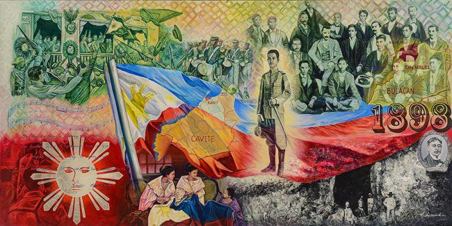
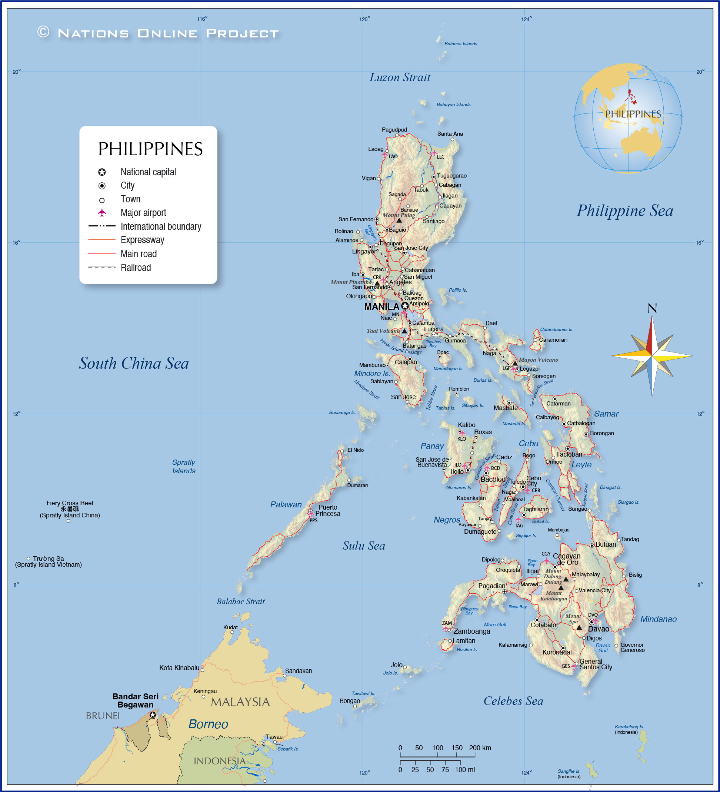
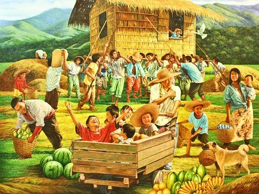
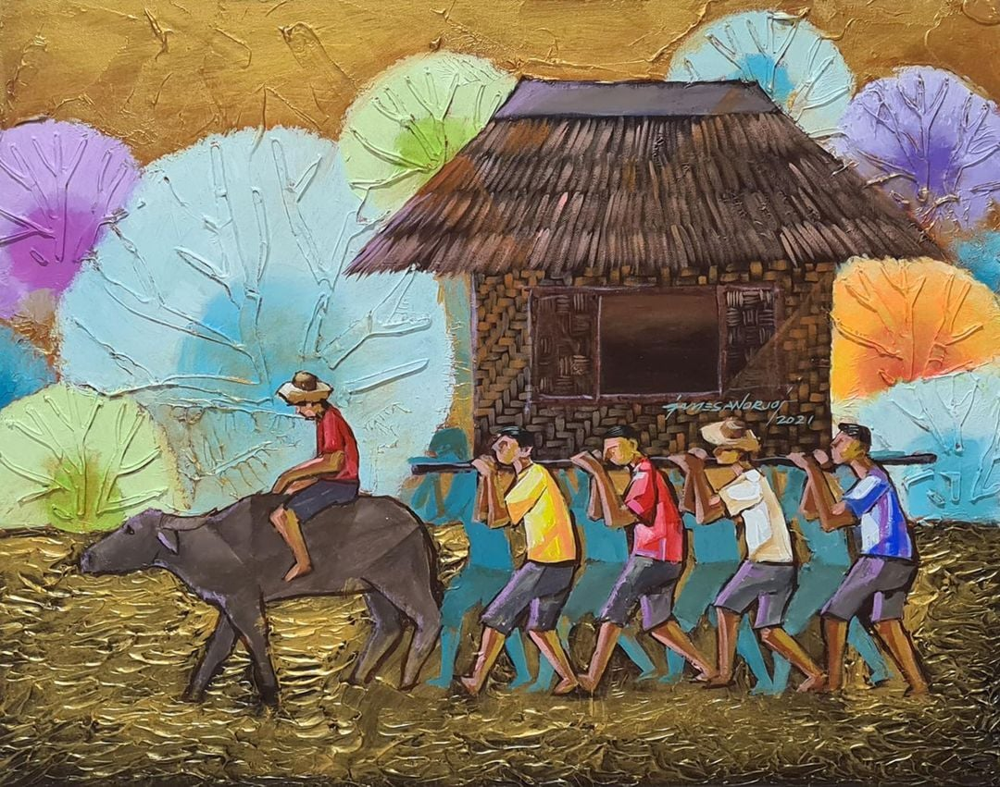

Video Gallery
Video Gallery Log-in
Log-in Contact Us
Contact Us
ABOUT PHILIPPINES |
HistoryThe Philippines takes its name from Philip II, who was king of Spain during the Spanish colonization of the islands in the 16th century. Because it was under Spanish rule for 333 years and under U.S. tutelage for a further 48 years, the Philippines has many cultural affinities with the West. It is, for example, the second most-populous Asian country (following India) with English as an official language and one of only two predominantly Roman Catholic countries in Asia (the other being East Timor). Despite the prominence of such Anglo-European cultural characteristics, the peoples of the Philippines are Asian in consciousness and aspiration. Then in 1898 came the war between the USA and Spain. On 30 April 1898, the Americans defeated the Spanish fleet in Manila Bay. Meanwhile, Filipino revolutionaries surrounded Manila. Their leader, Emilio Aguinaldo declared the Philippines independent on 12 June. However, as part of the peace treaty, Spain ceded the Philippines to the USA. The Americans planned to take over. The Philippines became independent on 4 July 1946. Manuel Roxas was the first president of the newly independent nation. n Ferdinand Marcos (1917-1989) was elected president in 1965. He was re-elected in 1969. However, the Philippines was dogged by poverty and inequality. In the 1960s a land reform program began. However many peasants were frustrated by its slow progress and a Communist insurgency began in the countryside. The country was wracked by political turmoil in the last quarter of the 20th century. After enduring more than a decade of authoritarian rule under Pres. Ferdinand Marcos, the broadly popular People Power movement in 1986 led a bloodless uprising against the regime. The confrontation resulted not only in the ouster and exile of Marcos but also in the restoration of democratic government to the Philippines Today the Philippines is still poor but things are changing. Since 2010 the Philippine economy has grown at about 6% a year. Today there is reason to be optimistic about the future. Meanwhile, In 2016 the Philippines launched its first satellite. It was called Diwata-1. In 2020 the population of the Philippines was 106 million. Rodrigo "Rody" Roa Duterte, the former Mayor of Davao City assumes the Presidency in the year 2016. He is the first president to come from Mindanao. Pres. Duterte declares Martial Law in Mindanao Island due to the rebellion in Marawi City by ISIS-affiliated Maute group on May 23 and extended by both houses of congress to December 31, 2017. The devastated city of Marawi was declared liberated by Duterte on October 17, 2017. Starting March 10 2020 , the many parts of the country, specially the National Capital Region, has been under various levels of lockdown due to the Corona virus (COVID-19) that started in Wuhan, China and has spread worldwide. Turning the economy from the fastest growing in Asia into a recession. Ferdinand Marcos Jr. was sworn in as president and Sara Duterte-Carpio as vice-president of the Republic in the year 2022 |
 |
Geography and environmentPhilippines, island country of Southeast Asia in the western Pacific Ocean. It is an archipelago consisting of more than 7,000 islands and islets lying about 500 miles (800 km) off the coast of Vietnam. Manila is the capital, but nearby Quezon City is the country’s most-populous city. Both are part of the National Capital Region (Metro Manila), located on Luzon, the largest island. The second largest island of the Philippines is Mindanao, in the southeast. Its terrain is primarily mountains, with little to large coastal lowlands The Philippines has a tropical climate, yet for the majority of the year it is only somewhat less hot and humid than many tropical nations. Even though the sun is out for virtually the entire year, there are small seasonal differences in the weather. The dry summer, which lasts from roughly late April to early June, is hot, muggy, and has minimal precipitation. The typhoon season lasts from June to September, and it is marked by regular downpours that both prevent outdoor activities and moderate the heat. Although the downpours are frequently brief in duration, the ensuing flash floods can cause havoc by closing streets, trapping drivers, and bringing Manila's already backed-up traffic to a virtual standstill. The period from November to March that follows the wet season is the most pleasant. Mornings can be cool during this time of year, and even midday temperatures are tolerable thanks to frequent breezes that reduce the heat. |
 |
DemographicsThe current population of the Philippines is 113,090,357 as of Wednesday, November 30, 2022, based on Worldometer elaboration of the latest United Nations data. Unsurprisingly for a country that is made up of many islands, the Philippines contains a diverse range of ethnic groups. The latest data available comes from the 2000 census, which reported the following breakdown:
|
 |
CultureThe culture of the Philippines comprises a blend of traditional Filipino and Spanish Catholic traditions, with influences from America and other parts of Asia. The Filipinos are family oriented and often religious with an appreciation for art, fashion, music and food. Filipinos are also hospitable people who love to have a good time. This often includes getting together to sing, dance, and eat. The annual calendar is packed with festivals, many of which combine costumes and rituals from the nation’s pre-Christian past with the Catholic beliefs and ideology of present day. Customs and TraditionsThe Filipinos celebrate Christmas for three months, but they also have a variety of other traditions and rituals. Cockfighting is one of the long-standing Sunday customs. Although in some countries it is forbidden or harsh, among Filipinos it is fairly common. It entails gathering, wagering, and eating on Filipino food, and it is a typical sight on the streets. Street parades are another custom in the Philippines that are related to food. Every fiesta has elaborate street parades with floats, music, dance, and mouthwatering regional cuisine. Without a street parade spectacle, no celebration is complete. Filipinos also follow traditions during weddings, reunions, and visits from relatives. They enjoy going to the beach, and it's not unusual to see a large Filipino clan—extended relatives, friends, and neighbors—chilling and having a good time close to the water. ArtsThe Philippines' arts provide a useful window into the country's rich cultural variety. The Filipino culture is strongly influenced by many disciplines, including music, dance, theater, visual arts, and literature. Filipinos are extraordinarily excellent dancers and musicians. Folk music and dancing are still popular in the twenty-first century. Folk music and dance are performed by a variety of ensembles, including Filipinescas, Barangay-Barrio, Hari Raya, and the Karilagan Ensemble. The tattoo culture of the Philippines, which dates back to the Pintados of Visayas, has influenced painting there. There are several museums on Luzon and in Mindanao where you may see some of the great artworks from the eighteenth century. In addition, Filipinos are well known for their expertise with cloth. The Itneg people weave a blanket known as binakol that has patterns intended to create optical illusions. The Filipinos are renowned for using natural dyes and fibers, including molasses, rust, onion, tomato, and tuba extracts, to weave and paint. |
 |